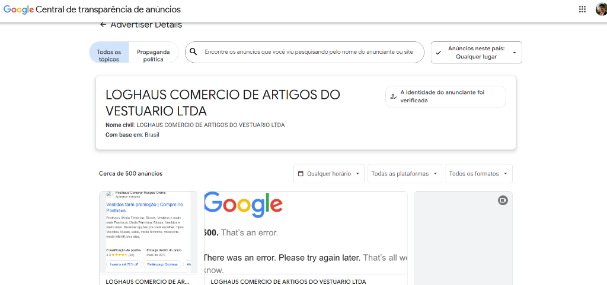
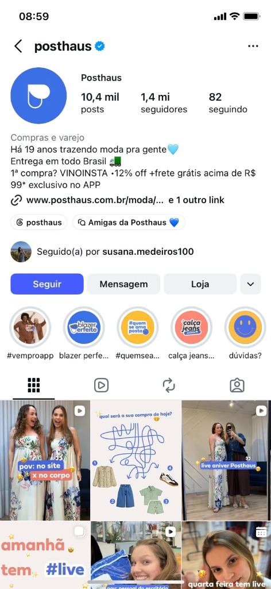
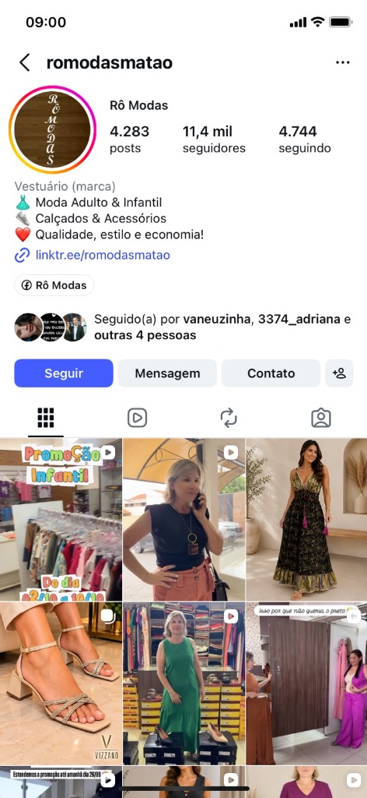
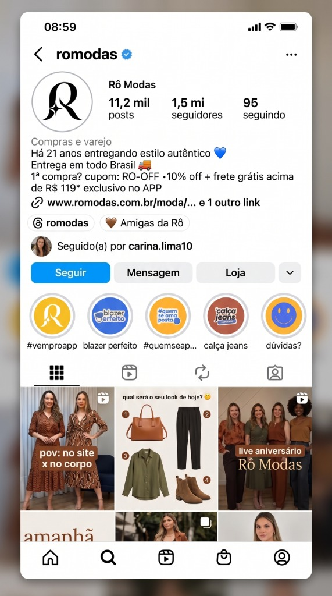
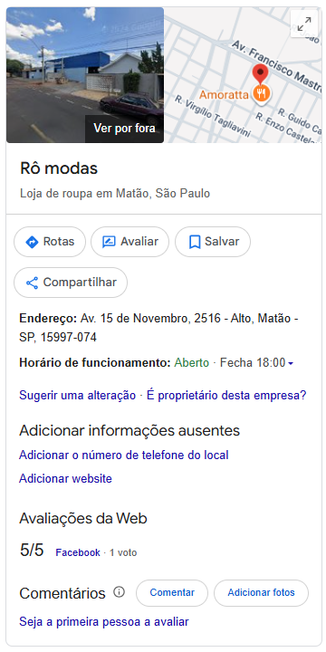
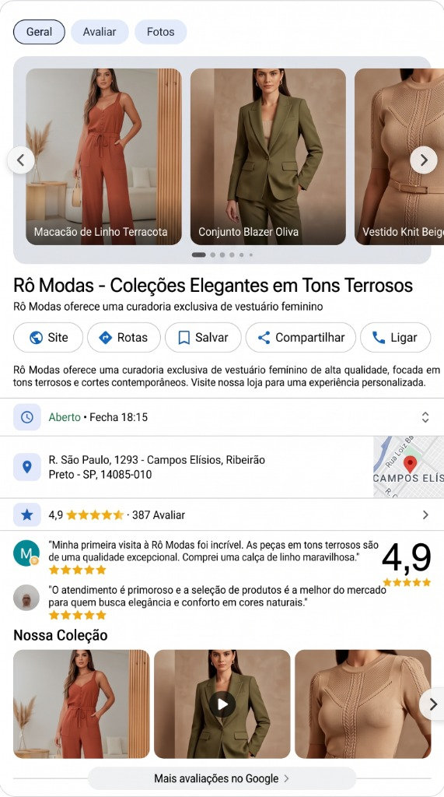

Rô Modas: Plano Estratégico & Processos Operacionais
1. O Funil de Vendas da Loja Virtual
Para vender roupas pela internet todos os dias, uma loja virtual precisa de um caminho simples e organizado. Esse caminho é estruturado em três etapas interdependentes: Aquisição, Conversão e Recompra.
www.romodas.com.br (a ser registrado junto com a Rô).2. Estudo de Mercado: Como os Grandes Varejistas Vendem Muito
Para entender como uma loja de roupas escala na internet, analisamos a Posthaus (Loghaus Comércio de Artigos do Vestuário Ltda). Ela foi escolhida porque tem o mesmo modelo de catálogo da Rô Modas: vende moda feminina, infantil, masculina, jeans e calçados com preços acessíveis.


Estrutura de E-commerce que Vende (Navegação Interativa)
Observe a arquitetura de página inicial da referência abaixo. Em vez de uma imagem estática reduzida, você pode rolar a janela diretamente para baixo e ver a disposição de pílulas de categorias, banners de preços acessíveis e vitrine de produtos:
O que Aprendemos com Essa Referência?
- O Feed serve como Vitrine: O feed do Instagram precisa ser organizado e limpo para passar confiança imediata a quem entra no perfil pela primeira vez;
- O Reels gera Desejo e Conexão: Vídeos curtos mostrando a roupa em movimento ("no site x no corpo") têm alcance muito maior do que fotos paradas;
- Preço e Frete Claros: O maior medo da cliente na internet é frete caro e tamanho errado. Oferecer Retirada Grátis na Loja Física de Matão e Motoboy Expresso elimina essa trava imediatamente.
3. Diagnóstico do Instagram Atual (@romodasmatao)
A Rô Modas já conquistou 11,4 mil seguidoras no Instagram e possui clientes fiéis. No entanto, ao analisar a página atual em detalhes, identificamos 4 pontos específicos que travam o crescimento das vendas:

Os 4 Pontos Críticos do Diagnóstico:
- 1. Bio Fraca e sem Gancho Comercial: O texto da biografia atual é genérico ("Qualidade, estilo e economia!"), não explica claramente que a loja envia para todo o Brasil, não divulga cupom de primeira compra e direciona para o Linktree em vez de levar a cliente para o site oficial;
- 2. Ausência Total de Destaques Estruturados: O perfil não possui os círculos de destaques organizados para tirar dúvidas rápidas de quem chega pela primeira vez (como localização no Bairro Alto, fotos de provador, linha jeans e depoimentos de clientes);
- 3. Feed sem Padronização Visual: As postagens não seguem uma identidade visual harmônica de cores e tipografia, gerando sensação de desorganização para novos visitantes;
- 4. Uso de Cartazes Promocionais Poluídos (Estilo Encarte): O feed contém artes promocionais feitas em aplicativos/IA com excesso de cores berrantes e fontes grandes estilo panfleto de supermercado. Ressalva importante: o problema não é a Inteligência Artificial em si (que é excelente para fotos de modelos realistas), mas sim essas montagens promocionais poluídas que desvalorizam o aspecto sofisticado das roupas.
4. Proposta de Nova Identidade Visual & Mockup do Instagram (Em Aprovação)
Abaixo apresentamos o estudo de modernização do perfil da Rô Modas. Esta nova identidade visual é uma proposta conceitual a ser avaliada junto com a dona Rô, para decidir se deseja manter a logo tradicional atual ou realizar a transição para este padrão visual minimalista:

A Nova Bio Oficial Sugerida
Compras e varejo
Há 21 anos entregando estilo autêntico 💙
Entrega em todo Brasil 🚚
1ª compra? Cupom: RO-OFF • 10% off + frete grátis acima de R$ 119* exclusivo no site
🔗 www.romodas.com.br/moda
5. Produção Visual de Moda com IA: Preços em Reais (R$)
Contratar fotógrafo e modelo profissional para cada nova peça custaria mais de R$ 1.500 por mês. Com ferramentas de Inteligência Artificial, a equipe tira a foto no cabide da loja e transforma em foto de modelo de revista em segundos.
| Plataforma | Plano Gratuito (Testes) | Plano Pago Mensal (R$) | O que Consegue Gerar | Qualidade para Roupas |
|---|---|---|---|---|
| Google Flow / Workspace | Gratuito (Créditos iniciais no Google AI Studio / Gemini) | Aprox. R$ 110 a R$ 165 / mês por usuário corporativo | Cerca de 100 imagens conceituais e vídeos institucionais | Boa para ideias gerais, mas altera um pouco a estampa e a costura da roupa. |
| Higgsfield AI (Recomendada) |
Gratuito (Créditos de boas-vindas para testar) | Plano Starter: aprox. R$ 85 a R$ 160 / mês Plano Plus: aprox. R$ 270 / mês |
De 100 a 300 fotos profissionais e até 40 vídeos curtos (5 a 10s) | Perfeita para moda: preserva o jeans, o caimento do tecido e cria modelos com rosto brasileiro. |
6. Nuvemshop: Os 3 Processos Operacionais da Loja Física
A loja virtual é a extensão direta da loja da Avenida Quinze de Novembro, 2516. No dia a dia, a equipe da loja (as vendedoras e a dona Rô) só precisa executar com excelência três processos operacionais simples:
www.romodas.com.br), o cadastro dos 20 produtos carro-chefe selecionados na loja hoje, os banners oficiais e as páginas institucionais — será realizada na próxima quarta-feira.
[Tipo da Peça] + [Modelagem] + [Tecido/Detalhe] — Rô Modas (Ex: Vestido Midi Canelado Manga Curta Casual — Rô Modas).Central de Manuais & Playbooks Interativos
Para abrir os manuais práticos completos com vídeos tutoriais do YouTube para assistir na tela e o passo a passo ilustrado com diagramação limpa, clique nos botões abaixo:
7. WhatsApp: O Fim das Taxas e a Criação da Comunidade VIP
A Meta passou a cobrar por mensagens de marketing em lista de transmissão, e muitas mensagens nem chegam porque as clientes não têm o número da loja salvo. Além disso, mandar dezenas de mensagens iguais causa bloqueio do chip da loja.
7.1. A Solução: Grupo Silencioso de Lançamentos VIP
Em vez de ficar caçando as pessoas no privado, criamos a Comunidade VIP no WhatsApp. Trata-se de um grupo onde apenas a Rô posta:
- Custo Zero: Não paga nada para a Meta;
- Mais de 80% de Abertura: As clientes entram por vontade própria porque querem ver as novidades antes de todo mundo;
- Dia do Lançamento: Toda quinta-feira às 19h, a equipe posta 5 fotos dos novos vestidos e calças com o link direto da Nuvemshop. As peças esgotam antes de irem para o feed público do Instagram.
7.2. Quando Usar Link de Produto vs. Link de Categoria no Grupo
Para não confundir a cliente e maximizar a taxa de compra rápida no WhatsApp, a equipe deve seguir esta regra prática:
Quando usar: Quando a Rô posta a foto de um look ou peça específica na quinta-feira (ex: "Vestido Midi Canelado Terracota").
Por que: O link leva a cliente direto para a tela do vestido com o botão "Comprar Agora". A compra acontece em 1 clique, sem distrações. Ideal para peças com poucas unidades no estoque.
Quando usar: Quando anunciar a chegada de uma remessa inteira ou reposição (ex: "Meninas, acabaram de chegar 15 calças jeans novas!").
Por que: O link leva direto para a categoria inteira (romodas.com.br/jeans). A cliente entra e consegue navegar entre todas as modelagens, lavagens e tamanhos disponíveis.
8. Google Meu Negócio: Atraindo Clientes para a Loja Física
Quando uma mulher em Matão digita "loja de roupa feminina perto de mim", ela já está com a bolsa na mão querendo comprar. Quem aparece em primeiro lugar no Google Maps ganha a cliente.


Os 3 Segredos do Algoritmo do Google
- Proximidade: O ponto na Avenida Quinze de Novembro, 2516, no Bairro Alto, tem excelente localização comercial em Matão;
- Relevância: O perfil precisa ter as categorias certas: Loja de roupas femininas, Loja de jeans e Loja de roupas infantis;
- Avaliações Frequentes: Pedir para as clientes fiéis da loja deixarem uma nota 5 estrelas toda semana faz o Google colocar a loja no topo do mapa.
9. O Segredo das Vendas nos Stories: A Técnica do Look 24 Horas
Esta é uma das técnicas de maior conversão imediata do varejo de moda digital: a estratégia do Look 24 Horas.
Por que funciona tanto? Porque as pessoas têm mania de deixar para comprar depois. Quando a Rô avisa que o desconto só vale enquanto aquele Story estiver no ar, a cliente clica na hora e finaliza a compra no site para não perder a oportunidade.
10. Rotina Operacional Diária da Equipe (Em Cascata)
Esta não é uma lista de tarefas teóricas. É a rotina prática e simples do que a equipe da Rô Modas faz todos os dias nos três canais principais: Instagram, WhatsApp e E-commerce.
RO-OFF exclusivo no site.